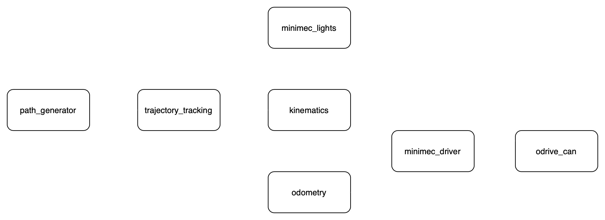
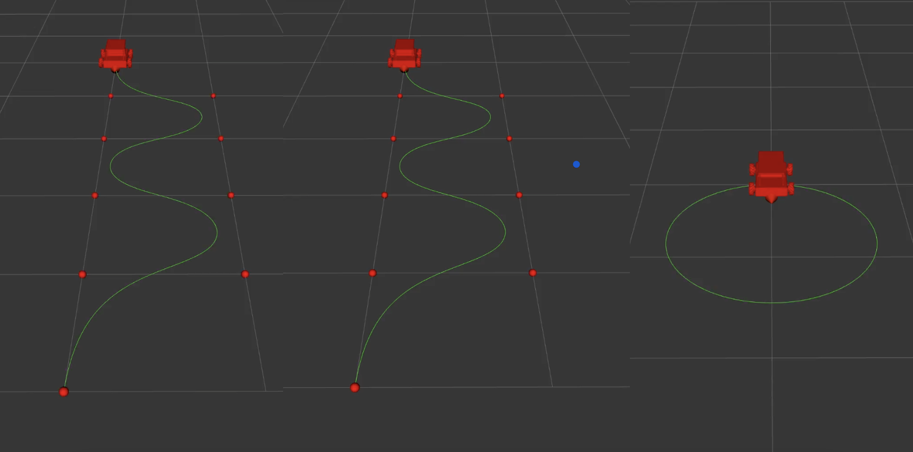
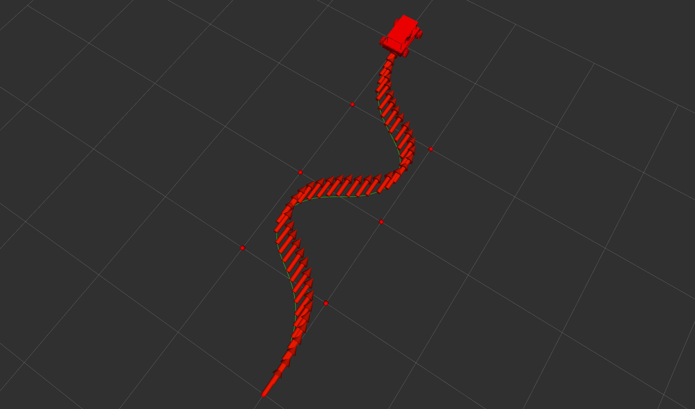
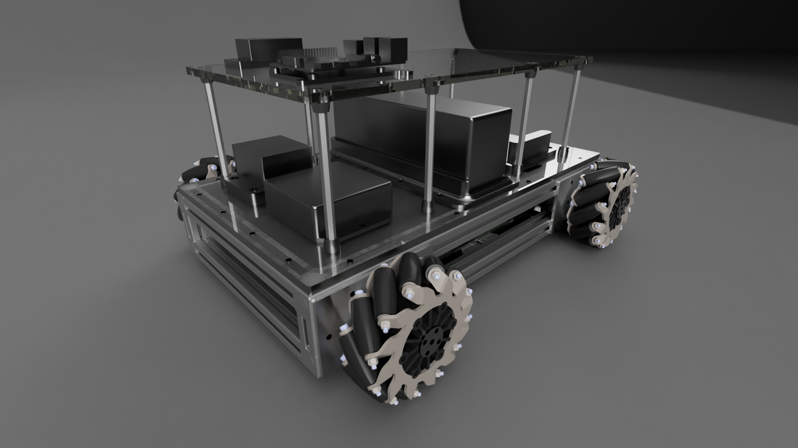

February, 2024
Omnidirectional robot from scratch
Full design, build and control of a mecanum wheel base.

Overview
This project is about creating a mecanum wheel mobile base end-to-end in only 10 weeks of part-time work. Mechanical design, electronics sourcing, fabrication and software that compose a robot. The driving mechanism provides a robot with holonomic drive: it can move in any direction on the plane.
Controls were implemented using ROS2 and C++. It has two control modes: teleoperation and trajectory tracking. For the trajectory tracking, the ROS2 architecture offers services that generate paths. Spline paths with fixed orientation, spline paths with point of interest (robot faces a point at all times), and circular paths with point of interest. More functionality can be incrementally added.
The system was designed for ease of manufacturability due to the short timeframe to complete the project. Chassis is comprised of widely available 2020 aluminum extrusion profiles. Custom parts are mostly machined out of sheet metal. Wheels are powered by BLDC motors in a direct drive configuration using Odrive robotics hardware.
This post outlines several aspects of the project:
ROS Architecture
The software running on this robot is based on ROS2 Iron, C++ and Python. All nodes except for the LEDs control node were implemented in C++. Image 1 depicts an overview of the ROS nodes that compose the system. The software was designed considering hardware abstraction, so anyone could potentially swap the minimec_driver and odrive_can nodes with others that interface with their own hardware and everything should work. The driver node exposes information provided by the odrive in a more standardized ROS2 format following conventions (joint states, cmd_vel, etc).

In teleoperation mode, the nodes path_generator and trajectory_tracking are not necessary, and the input velocity commands are provided by the user. In this case, the odometry feedback is not used, except for visualization purposes.
Path generation

A ROS2 node offers services that generate different plans/trajectories. The three available modes are:
The circular path generation was implemented from scratch, and required basic geometry calculations. The splines are generated using the TinySpline library. Basically, the user provides a set of control points, and a spline that fits those is generated. Then, the algorithm runs through the spline (at a user set precision), and generates a path only taking the (x,y) position from the spline. The orientation is independently added.
Control
The control system commands wheel speeds to track desired trajectories. The motor drivers are configured to receive speed commands and provide position feedback form their encoders to the implemented odometry.

The used algorithm is a feedforward + PI controller. Using the reference trajectory, a feedforward body twist is calculated. The error between the current expected configuration and the odometry feedback is used for the PI control. A representation of the control system is shown in Image 3.

A visualization of the robot tracking the reference trajectory is shown in Image 4. Note this visualization is not a simulation, but a real time feedback of the robot’s estimation from its odometry, overlayed with the reference trajectory.
Mechanical design & build

The system was designed for fast fabrication and assembly. The actuators are a custom design with an attempt at making them modular. Few components had to be machined in house. A render of the final design is shown on Image 5.
Something that makes this design special is the direct drive mechanism, no reduction in between the motors and wheels. This is not usual in mecanum wheel vehicles, as they usually operate with different types of reductions (belt drives, chain & sprocket, planetary gearboxes). Advantages of a direct drive mechanism include reduced noise, efficiency, simple design and backdrivability (especially important for collaborative robotics). Also, the backdrivability could allow for current regeneration when braking, although this is not implemented at the moment.
A timelapse of the assembly follows. The total assembly time is estimated to be around 10-15 hours.
Electronics
The onboard computer is a Raspberry Pi 4. It communicates with the Odrive S1 motor controllers through a USB-CAN adapter. The outrunner brushless motors and encoders were purchased from Odrive. The system uses a circuit breaker as a main switch. A Kar-Tech wireless E-Stop operates a relay that cuts power to the motors (but not to the Raspberry Pi). The used battery provides 22.2V nominal voltage. An isolated step-down is used to power the Raspberry Pi.
LEDs
A strip of 142 neopixel LEDs is mounted under the bottom panel of the robot. This was a final addition to the project, as it is more aesthetic than functional. Nonetheless, the leds are driven by a ROS2 node and they provide visual feedback of robot movement. While the robot is stationary, a chase of rainbow colors runs through the LEDs. When the robot has linear velocity, the leds light up on the direction of the velocity. When there is only angular velocity, the leds perform a chase in the direction of rotation. These features can be seen in the main video.
Future work
While this project’s result is a fully operational robot, there is still a lot to do. The small timeframe to work on the project meant taking shortcuts and simplifications for the sake of time. A non-exhaustive list of features to be added/reviewed follows:
Attribution
This project makes use of the TinySpline library for generating the spline from reference points.
The kinematics and trajectory tracking are heavily based on Lynch, Park - Modern Robotics book and the corresponding Modern Robotics python library